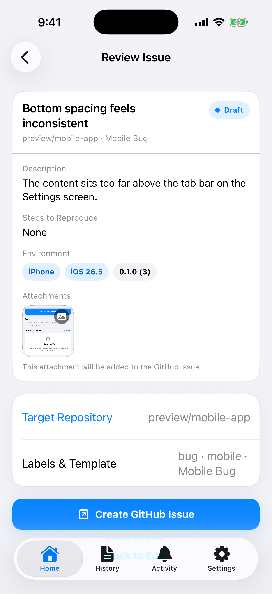
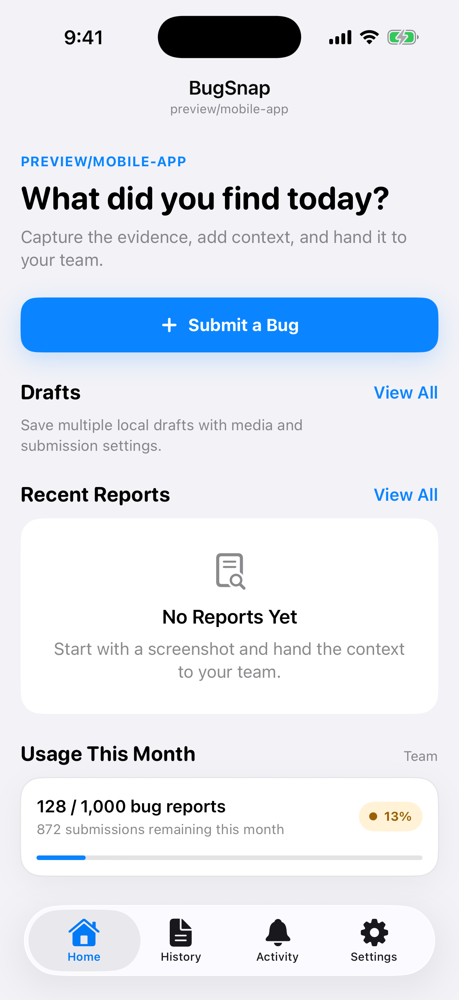

Mobile bug reporting for GitHub
The bug is already on your screen. Send the evidence with it.
Capture a screenshot or recording, add the context your team needs, and review a structured GitHub Issue before it is created.
- Selected repositories only
- Preview before creating
- No repository code required

Evidence stays attached to the work, not scattered across chat threads.
A complete handoff
From “look here” to an Issue your team can act on.
-
01
Capture the evidence
Start with a screenshot, photo, short recording, file, clipboard, or Share Sheet.
-
02
Mark what matters
Add arrows, boxes, drawing, text, or mosaic without leaving the mobile flow.
-
03
Add useful context
BugSnap organizes title, severity, reproduction details, device, OS, and app version.
-
04
Review, then create
Choose the repository and metadata, preview the final Issue, then hand it to GitHub.
The actual product
A focused path, built for the phone in your hand.
BugSnap keeps capture, context, destination, and Issue preview in one recoverable flow. Local drafts and retryable submissions make it practical beyond a perfect network.

Clear boundaries
Built to move evidence, not to browse your code.
GitHub access is limited to repositories selected for the BugSnap GitHub App. The mobile client keeps no App private key, installation token, or long-term media key.
Read the privacy policy- On your phone
- Capture, annotate, review, and recover drafts.
- In BugSnap
- Short-lived sessions, media processing, and Issue delivery.
- In GitHub
- The final Issue, ready for assignment and team follow-through.
First release
BugSnap is preparing for the App Store.
iOS is the first release. Android is being brought to feature parity.